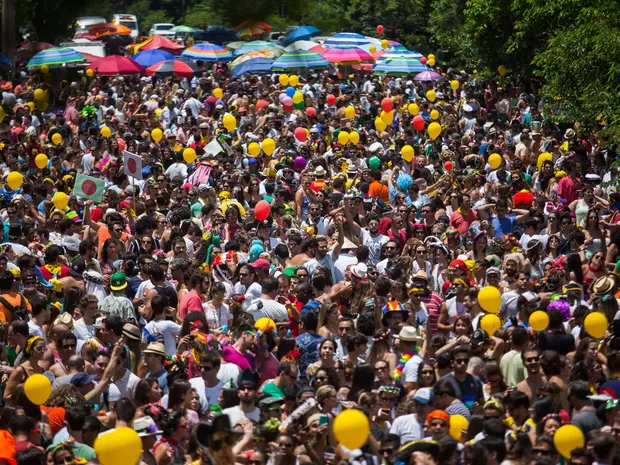

QUANDO COME SE LAMBUZA O bloco Quando Come Se Lambuza desfila desde 2014, quando foi criado em comemoração ao aniversário do mestre de bateria Melado. O bloco conta com cerca de 180 ritmistas e instrumentos de escola de samba, que garantem muita música boa e diversão às centenas de foliões que seguem o desfile.
O Bloco Filhos da PUC foi criado em 2018 pelo Diretório Central dos Estudantes PUC Minas com o objetivo de integrar estudantes e a população da capital mineira. A bateria do bloco è formada exclusivamente por alunos da instituição!
Com direito à guitarrista e baixista, o bloco Ziguiriguidum traz para o bairro de Santa Teresa um cortejo com muito axé, pop rock e sertanejo. Em 2019, foi só o segundo ano de folia do bloco nas ruas de Belo Horizonte.
